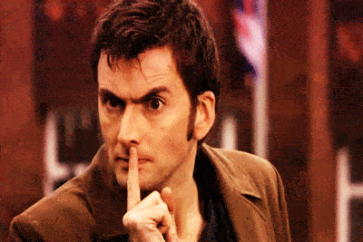

< < < Back
How To Overcome A False Rape Accusation – Return Of Kings
The manosphere talks about a plethora of subjects. Yet, I see one topic avoided or not expanded on fully: the full scale effects of a false rape accusation. All the articles I’ve had a chance to look at talk about advocacy or how to prevent it. The problem I have with this is that when it happens it will be like a personal Pearl Harbor. I want to inform young people what to do when accused of such a heinous crime. Here is a story arc of what to do (not to be confused with actual legal advice):
Your words can only hurt you

Imagine you’re a young player aged 16-25 dealing with a false rape accusation. You are living your life when you get either a call from the school or police for a “talk.” You think maybe they messed up on the financial aid or general bureaucracy shenanigans. When you enter the place they directed you to go to, a counselor/RA/authority figure wants to ask you questions.
They will start up with some softball questions that won’t tip off even the most paranoid people. Then they will ask some loaded questions about sex life and girls. They will talk about an “anonymous” complaint about your “actions” and want you to face a kangaroo court. The best solution to make sure that these little feminist brown shirts don’t crucify you based on an informant’s lie is to be quiet. The magic words of “I need my lawyer” coupled with “No comment” and “I don’t recall” have saved many innocent and even guilty people. Your words can only hurt you in a situation like this. They don’t care about objectivity or they would have had the accuser in the same room as the accused. This whole meet up is intended for you to make you slip and admit something you never did.
It’s not just the school board/authorities that will try to trip you up. Expect to be treated like Osama Bin Laden because the anti-rape zealots will see you as the king of rapists. They will use any words you may have said to them in passing and inform the authorities. Any stupid joke you tell them will be used as character evidence by the D.A. Police and law enforcement regularly use hearsay to help convict people.
Torture
The internet will be like bittersweet chocolate for you when the investigation and trial is happening. You can totally be anonymous to the internet world without being the “rapist.” Yet, many sites will have info of your “alleged” crime. Your name will be muttered by the mentally ill freaks on Tumblr, Twitter and Facebook as the INSERT YOUR COLLEGE/TOWN’S rapist. I recommend shutting down anything that is linked to your real life name. If you have a PUA Youtube channel, make it private. Same for a Facebook profile that has you talking about embarrassing stuff.
White knights will research everything you’ve ever put up on the internet to find “proof” you’re a terrible person. This will also happen in real life since the media loves to run stories about “rapists.” Find a hobby where you can relax and be you. Learn a language, instrument or something of that caliber. Don’t let the mental stress of an investigation get to you, or else you may end up doing stupid stuff that can hurt you in the long run.
Aftermath
You survived the investigation and the authorities dropped the case or you won the trial. You will still have to deal with pissed off feminists talking about how you used the patriarchy to win. They will hound places you frequent with a rape whisper campaign. You will deal with J Edgar Hoover levels of zealotry. Information on the case will still stay up on the internet and you must forever explain to people what actually happened. It’s not an easy road to drive on but it’s better than being in a cell. The turmoil ended but know you must live with the trauma of the emotional rape by the feminist power structure.
False rape accusations are a nasty reality in modern day America. The best piece of advice is to shut your mouth and get a lawyer. I just don’t want another innocent man in jail over fabricated lies from mentally ill women. Never forget that feminists want to put every male accused of something into a personal shame spiral of hell. I hope that you can avoid it.
Read Next: 3 Signs She’s Making A False Rape Accusation


{kind=link}
{kind=link}